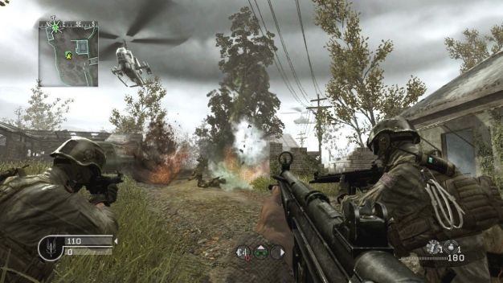
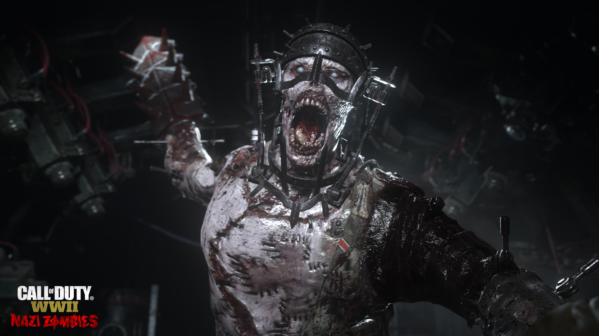

Call of Duty World WWII
About The Game
Call of Duty returns to its roots with Call of Duty: WWII – a breathtaking experience that redefines World War II for a new gaming generation. Land in Normandy on D-Day and battle across Europe through iconic locations in historys most monumental war.
Title: Call of Duty: WWII
Genre: Action
Developer: Sledgehammer Games , Raven Software
Publisher: Activision
Release Date: 02 Nov, 2017
Minimum Requirements for 720p30 at low settings
OS: Windows 7 64-Bit or later
Processor: CPU: Intel Core i3 3225 3.3 GHz or AMD Ryzen 5 1400
Memory: 8 GB RAM
Graphics: NVIDIA GeForce GTX 660 @ 2 GB / GTX 1050 or ATI Radeon HD 7850 @ 2GB / AMD RX 550
DirectX: Version 11
Network: Broadband Internet connection
Storage: 90 GB available space
Sound Card: DirectX Compatible
Screenshots

